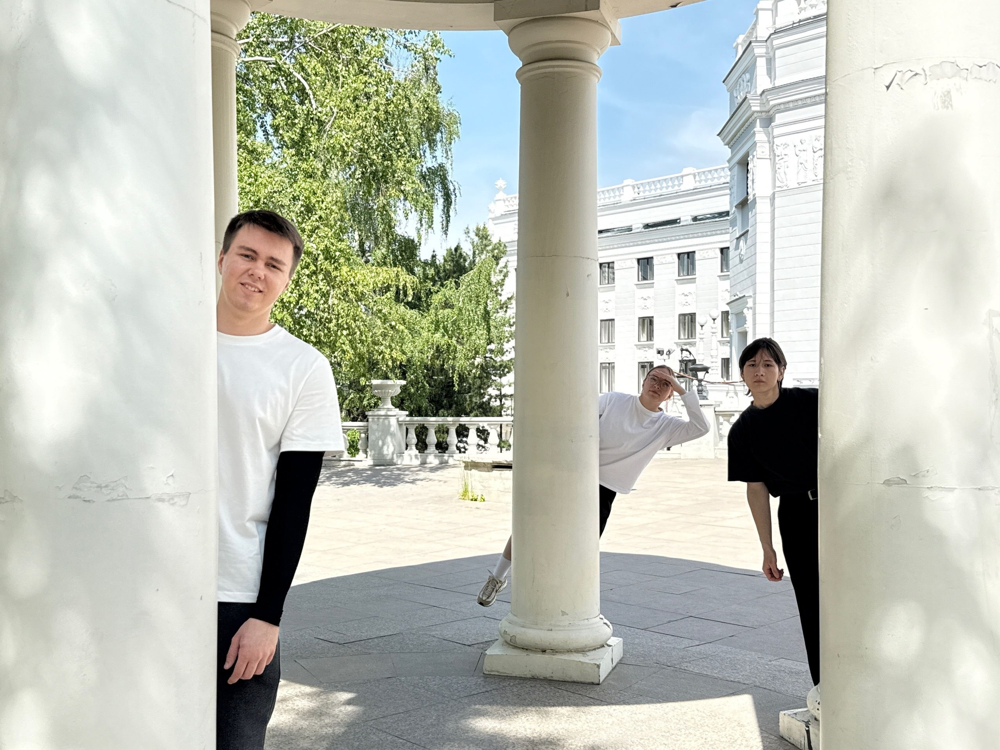
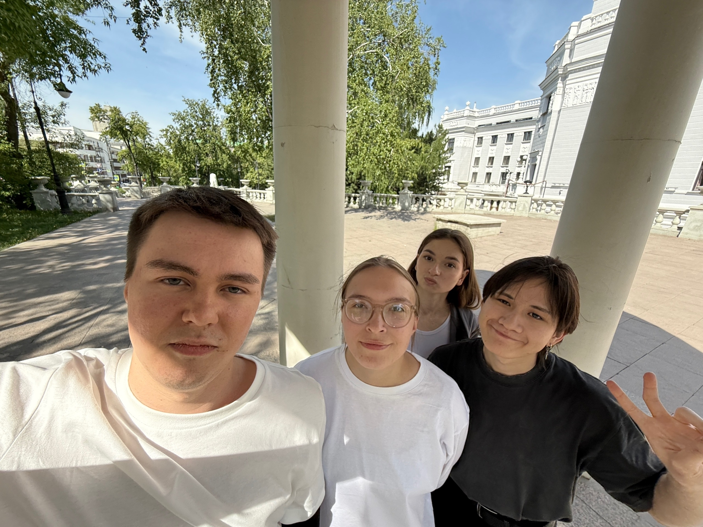

Как всё начиналось
Мы — команда студентов первого курса. На проектном практикуме перед нами поставили задачу: создать сайт, который познакомит деканат с нашими интересами. Мы решили не просто перечислить хобби, а сделать что-то полезное и живое.
Так родилась идея «5 рекомендаций» — сайта, где каждый участник команды делится тем, что он действительно любит и в чём разбирается.

Наша команда
В нашей команде пять человек, и у каждого — своя роль и своя страсть.
- Денис — 🎮 Игры
- Настя — 🍜 Еда
- Никита — 📚 Книги
- Лиза — 🎬 Фильмы
- Тимур — 🎵 Музыка

Как мы это делали
Для создания сайта мы использовали: HTML, CSS, JavaScript, Figma и GitHub Pages.
Каждый участник отвечал за свою зону: дизайн, вёрстку, контент. Мы научились работать в команде и доводить проект до конца.

Что в итоге
Мы получили не просто учебный проект, а живой, полезный сайт. Он знакомит с командой и даёт людям реальные рекомендации.
Мы научились работать с Git, распределять задачи, адаптивной вёрстке и презентовать результат.